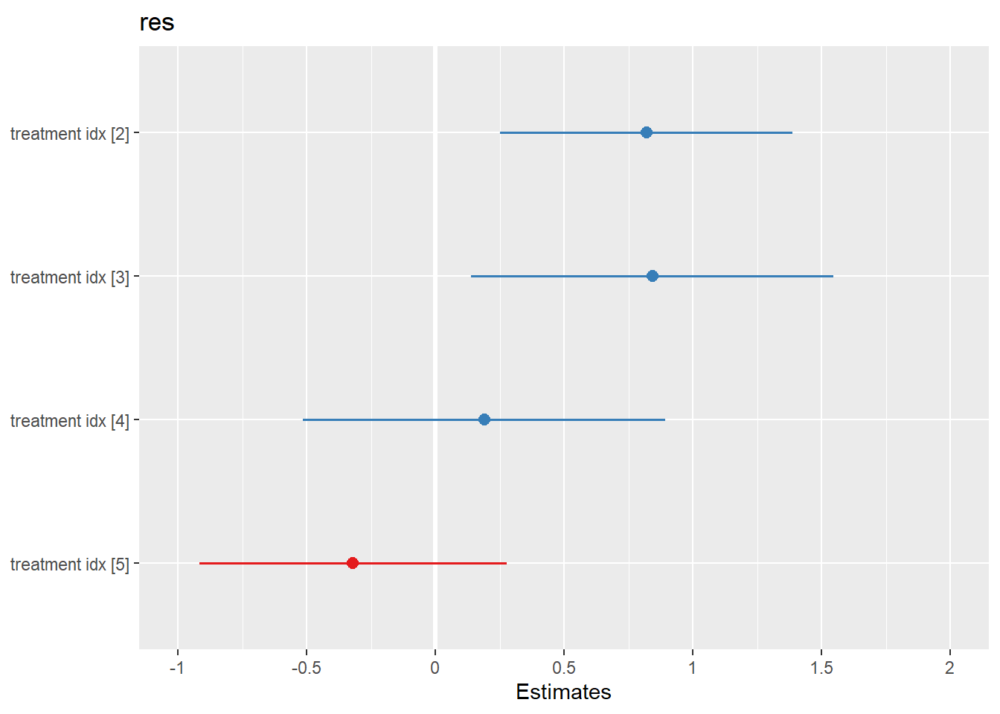
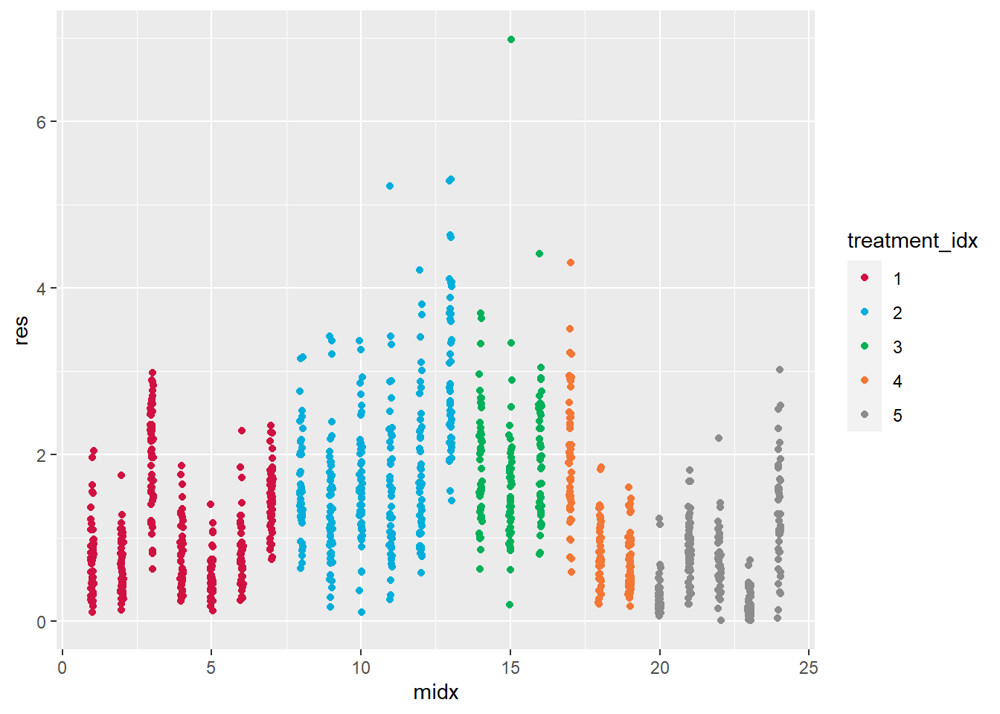

Chapter 4 Conduct LME in R: Example 1
nlme and lme4 are the two most popular R packages for LME analysis. Besides the use of slightly different syntaxes for random effects, their main functions do differ in several other ways, such as their flexibility for modeling different types of outcomes, how they handle heteroscedasticity, the covariance structure of random effects, crossed random effects, and their approximations for test statistics. A full description of these differences is beyond the scope of this article. We refer interested readers instead to the documentation for each of the two packages. Next, we show how to analyze Examples 1-3 using linear mixed effects models.
4.1 Wrong analysis with lm or anova
Example 1. The data have been described in Part I. We first fit a conventional linear model using the lm function, which erroneously pools all the neurons together and treats them as independent observations.
################ Wrong analysis ####################
#Wrong analysis: using the linear model
obj.lm=lm(res~treatment_idx, data=Ex1)
summary(obj.lm)##
## Call:
## lm(formula = res ~ treatment_idx, data = Ex1)
##
## Residuals:
## Min 1Q Median 3Q Max
## -1.7076 -0.5283 -0.1801 0.3816 5.1378
##
## Coefficients:
## Estimate Std. Error t value Pr(>|t|)
## (Intercept) 1.02619 0.03997 25.672 < 2e-16 ***
## treatment_idx2 0.78286 0.05868 13.340 < 2e-16 ***
## treatment_idx3 0.81353 0.07551 10.774 < 2e-16 ***
## treatment_idx4 0.16058 0.07349 2.185 0.0291 *
## treatment_idx5 -0.36047 0.06266 -5.753 1.11e-08 ***
## ---
## Signif. codes: 0 '***' 0.001 '**' 0.01 '*' 0.05 '.' 0.1 ' ' 1
##
## Residual standard error: 0.7553 on 1195 degrees of freedom
## Multiple R-squared: 0.2657, Adjusted R-squared: 0.2632
## F-statistic: 108.1 on 4 and 1195 DF, p-value: < 2.2e-16summary(obj.lm)$coefficients## Estimate Std. Error t value Pr(>|t|)
## (Intercept) 1.0261907 0.03997259 25.672363 4.064778e-116
## treatment_idx2 0.7828564 0.05868406 13.340189 6.040147e-38
## treatment_idx3 0.8135287 0.07550847 10.774006 6.760583e-26
## treatment_idx4 0.1605790 0.07348870 2.185084 2.907634e-02
## treatment_idx5 -0.3604732 0.06265813 -5.753015 1.112796e-08anova(obj.lm)## Analysis of Variance Table
##
## Response: res
## Df Sum Sq Mean Sq F value Pr(>F)
## treatment_idx 4 246.62 61.656 108.09 < 2.2e-16 ***
## Residuals 1195 681.65 0.570
## ---
## Signif. codes: 0 '***' 0.001 '**' 0.01 '*' 0.05 '.' 0.1 ' ' 1anova(obj.lm)[1,5]## [1] 1.17392e-78#wrong analysis: use ANOVA
obj.aov=aov(res~treatment_idx, data=Ex1)
summary(obj.aov)## Df Sum Sq Mean Sq F value Pr(>F)
## treatment_idx 4 246.6 61.66 108.1 <2e-16 ***
## Residuals 1195 681.6 0.57
## ---
## Signif. codes: 0 '***' 0.001 '**' 0.01 '*' 0.05 '.' 0.1 ' ' 1In this example, the parameters of major interest are the coefficients of the treatments (1: baseline; 2: 24 hours; 3: 48 hours; 4: 72 hours; 5: 1 week following treatment). The summary function of the lm object provides the estimates, standard error, t statistics, and p-values for each time point after the treatment, with the before treatment measurement used as the reference. The overall significance of the treatment factor is performed using an F test, which is available in the ANOVA table by applying the anova function to the lm object. Equivalently, one can also use the aov function to obtain the same ANOVA table.
4.2 LME: estimation methods
As explained in Part I, ignoring the dependency due to clustering can lead to unacceptably high type I error rates. We next fit a linear mixed effects model by including animal-specific means. This can be done using either nlme::lme (the lme function in the nlme package) or lme4::lmer (the lmer function in the lme4 package), as shown below
################## Linear Mixed-effects Model ###########################
#use nlme::lme
library(nlme) #load the nlme library
# The nlme:lme function specifies the fixed effects in the formula
# (first argument) of the function, and the random effects
# as an optional argument (random=). The vertical bar | denotes that
# the cluster is done through the animal id (midx)
obj.lme=lme(res~treatment_idx, data= Ex1, random = ~ 1|midx)
summary(obj.lme)## Linear mixed-effects model fit by REML
## Data: Ex1
## AIC BIC logLik
## 2278.466 2314.067 -1132.233
##
## Random effects:
## Formula: ~1 | midx
## (Intercept) Residual
## StdDev: 0.5127092 0.5995358
##
## Fixed effects: res ~ treatment_idx
## Value Std.Error DF t-value p-value
## (Intercept) 1.0006729 0.1963782 1176 5.095642 0.0000
## treatment_idx2 0.8194488 0.2890372 19 2.835098 0.0106
## treatment_idx3 0.8429473 0.3588556 19 2.348988 0.0298
## treatment_idx4 0.1898432 0.3586083 19 0.529389 0.6027
## treatment_idx5 -0.3199877 0.3043369 19 -1.051426 0.3063
## Correlation:
## (Intr) trtm_2 trtm_3 trtm_4
## treatment_idx2 -0.679
## treatment_idx3 -0.547 0.372
## treatment_idx4 -0.548 0.372 0.300
## treatment_idx5 -0.645 0.438 0.353 0.353
##
## Standardized Within-Group Residuals:
## Min Q1 Med Q3 Max
## -2.5388279 -0.5761356 -0.1128839 0.4721228 8.8600545
##
## Number of Observations: 1200
## Number of Groups: 24#use lme4::lmer
library(lme4) #load the lme4 library
# The nlme:lme4 adds the random effects directly in the
# formula (first argument) of the function
obj.lmer=lmer(res ~ treatment_idx+(1|midx), data=Ex1)
summary(obj.lmer)## Linear mixed model fit by REML ['lmerMod']
## Formula: res ~ treatment_idx + (1 | midx)
## Data: Ex1
##
## REML criterion at convergence: 2264.5
##
## Scaled residuals:
## Min 1Q Median 3Q Max
## -2.5388 -0.5761 -0.1129 0.4721 8.8601
##
## Random effects:
## Groups Name Variance Std.Dev.
## midx (Intercept) 0.2629 0.5127
## Residual 0.3594 0.5995
## Number of obs: 1200, groups: midx, 24
##
## Fixed effects:
## Estimate Std. Error t value
## (Intercept) 1.0007 0.1964 5.096
## treatment_idx2 0.8194 0.2890 2.835
## treatment_idx3 0.8429 0.3589 2.349
## treatment_idx4 0.1898 0.3586 0.529
## treatment_idx5 -0.3200 0.3043 -1.051
##
## Correlation of Fixed Effects:
## (Intr) trtm_2 trtm_3 trtm_4
## tretmnt_dx2 -0.679
## tretmnt_dx3 -0.547 0.372
## tretmnt_dx4 -0.548 0.372 0.300
## tretmnt_dx5 -0.645 0.438 0.353 0.353On the method of parameter estimation for LME. Note that lme and lmer produce exactly the same coefficients, standard errors, and t statistics. By default, the lme and lmer function estimate parameters using a REML procedure. Estimation of the population parameters in LME is often conducted using maximum likelihood (ML) or REML, where REML stands for the restricted (or residual, or reduced) maximum likelihood. While the name REML sounds confusing, REML obtains unbiased estimators for the variances by accounting for the fact that some information from the data is used for estimating the fixed effects parameters. A helpful analogy is the estimation of the population variance by the maximum likelihood estimator \(\sum_{i=1}^n (x_i-\bar x)^2/n\), which is biased, or an unbiased estimator \(\sum_{i=1}^n (x_i-\bar x)^2/(n-1)\). This strategy is helpful when \(n\) is small.
4.3 On the degrees of freedom and P-values
A noticeable difference between the lme and lmer outputs is that p-values are provided by lme but not lmer. The calculation of p-values in lme uses the degrees of freedom according to “the grouping level at which the term is estimated” (José Pinheiro and Bates (2006)), which is the animal level in Example 1. However, the calculation of the degrees of freedom for a fixed model is not as straightforward as for a linear model (see the link here for some details). Several packages use more accurate approximations or bootstrap methods to improve the accuracy of p-values. In the following, we show different methods to compute (1) the overall p-value of the treatment factor, (2) p-values for individual treatments, and (3) p-value adjustment for multiple comparisons. These p-values are for testing the fixed effects. We defer the discussion related to random effects until Example 3.
4.4 The overall p-value for the treatment factor vs p-values for individual treatments
The overall p-value for the treatment factor. This p-value aims to understand whether there is any statistically significant difference among a set of treatments. We offer several ways to calculate this type of p-values. When assessing the overall treatment effects using a likelihood ratio test, one should use maximum likelihood, rather than REML, when using lme or lmer.
#overall p-value from lme
#Wald F-test from an lme object
obj.lme=lme(res~treatment_idx, data= Ex1, random = ~ 1|midx)
anova(obj.lme) #Wald F-test## numDF denDF F-value p-value
## (Intercept) 1 1176 142.8589 <.0001
## treatment_idx 4 19 4.6878 0.0084#Likelihood ratio test from lme objects
# notice the argument of the option “method”
# which calls for using ML instead of REML
obj.lme0.ml=lme(res~1, data= Ex1, random = ~ 1|midx, method="ML")
obj.lme.ml=lme(res~treatment_idx, data= Ex1, random = ~ 1|midx, method="ML")
anova(obj.lme0.ml, obj.lme.ml)## Model df AIC BIC logLik Test L.Ratio p-value
## obj.lme0.ml 1 3 2281.441 2296.712 -1137.721
## obj.lme.ml 2 7 2272.961 2308.592 -1129.481 1 vs 2 16.48011 0.0024#equivalently, one can conduct LRT using drop1
drop1(obj.lme.ml, test="Chisq")## Single term deletions
##
## Model:
## res ~ treatment_idx
## Df AIC LRT Pr(>Chi)
## <none> 2273.0
## treatment_idx 4 2281.4 16.48 0.002438 **
## ---
## Signif. codes: 0 '***' 0.001 '**' 0.01 '*' 0.05 '.' 0.1 ' ' 1As noted earlier, p-values are not provided for the overall effect or individual treatments by the lmer function in the lme4 package. Next, we show how to use the lmerTest package to calculate p-values.
library(lmerTest)## Warning: package 'lmerTest' was built under R version 4.1.3##
## Attaching package: 'lmerTest'## The following object is masked from 'package:lme4':
##
## lmer## The following object is masked from 'package:stats':
##
## stepobj.lmer=lmerTest::lmer(res ~ treatment_idx+(1|midx), data=Ex1)
#when ddf is not specified, the F test with Satterthwaite's method will be use
anova(obj.lmer, ddf="Kenward-Roger")## Type III Analysis of Variance Table with Kenward-Roger's method
## Sum Sq Mean Sq NumDF DenDF F value Pr(>F)
## treatment_idx 6.74 1.685 4 19.014 4.6878 0.008398 **
## ---
## Signif. codes: 0 '***' 0.001 '**' 0.01 '*' 0.05 '.' 0.1 ' ' 1#likelihood ratio test
obj.lmer.ml=lme4::lmer(res ~ treatment_idx+(1|midx), data=Ex1, REML=F)
obj.lmer0.ml=lme4::lmer(res ~ 1+(1|midx), data=Ex1, REML=F)
anova(obj.lmer0.ml, obj.lmer.ml)## Data: Ex1
## Models:
## obj.lmer0.ml: res ~ 1 + (1 | midx)
## obj.lmer.ml: res ~ treatment_idx + (1 | midx)
## npar AIC BIC logLik deviance Chisq Df Pr(>Chisq)
## obj.lmer0.ml 3 2281.4 2296.7 -1137.7 2275.4
## obj.lmer.ml 7 2273.0 2308.6 -1129.5 2259.0 16.48 4 0.002438 **
## ---
## Signif. codes: 0 '***' 0.001 '**' 0.01 '*' 0.05 '.' 0.1 ' ' 1#drop1(obj.lmer.ml, test="Chisq") also worksRemarks: (i) Since the function lmer is in both nlme and lmerTest, to ensure that the lmer from lmerTest is used, we specify the package name by using double colon: lmerTest::lmer. (ii) The default method of calculating the denominator degrees of freedom is Satterwhite’s method. One can use the option ddf to choose the Kenward-Roger method, which is often preferred by many researchers. (iii) Based on the simulation studies in (José Pinheiro and Bates (2006)), F tests usually perform better than likelihood ratio tests.
P-values for individual treatments. The effects of individual treatments are also of great interest. As shown earlier, the individual p-values from nlme::lme can be obtained by using the summary function. Similarly, one can also obtain individual p-values by using the lmerTest package for a model fit by lmer.
obj.lmer=lmerTest::lmer(res ~ treatment_idx+(1|midx), data=Ex1)
#summary(obj.lmer) #Sattertwhaite's method for denominator degrees of freedom
summary(obj.lmer, ddf="Kenward-Roger")## Linear mixed model fit by REML. t-tests use Kenward-Roger's method [
## lmerModLmerTest]
## Formula: res ~ treatment_idx + (1 | midx)
## Data: Ex1
##
## REML criterion at convergence: 2264.5
##
## Scaled residuals:
## Min 1Q Median 3Q Max
## -2.5388 -0.5761 -0.1129 0.4721 8.8601
##
## Random effects:
## Groups Name Variance Std.Dev.
## midx (Intercept) 0.2629 0.5127
## Residual 0.3594 0.5995
## Number of obs: 1200, groups: midx, 24
##
## Fixed effects:
## Estimate Std. Error df t value Pr(>|t|)
## (Intercept) 1.0007 0.1964 18.9806 5.096 6.44e-05 ***
## treatment_idx2 0.8194 0.2890 18.9745 2.835 0.0106 *
## treatment_idx3 0.8429 0.3589 19.0485 2.349 0.0298 *
## treatment_idx4 0.1898 0.3586 18.9960 0.529 0.6027
## treatment_idx5 -0.3200 0.3043 19.0078 -1.051 0.3062
## ---
## Signif. codes: 0 '***' 0.001 '**' 0.01 '*' 0.05 '.' 0.1 ' ' 1
##
## Correlation of Fixed Effects:
## (Intr) trtm_2 trtm_3 trtm_4
## tretmnt_dx2 -0.679
## tretmnt_dx3 -0.547 0.372
## tretmnt_dx4 -0.548 0.372 0.300
## tretmnt_dx5 -0.645 0.438 0.353 0.3534.5 P-value adjustment for multiple comparisons
Note that the individual p-values shown above are for the comparison between each treatment group and the control group. Multiple comparisons have not been considered so far. Once a model is fit and an overall significance has been established, a natural question is which treatments are different from each other among a set of treatments. Consider Example 1, which involves five experimental conditions. The number of comparisons to examine all pairs of conditions is 10. When using unadjusted p-values and conducting testing at significance level \(\alpha =0.05\), the chance that we will make at least one false positive is much greater than 5%. The emmeans package can be used to adjust p-values by taking multiple comparisons into consideration. Two useful options are (i) the adjustment of multiple comparisons for all pairs of treatment by adding “pairwise” and (ii) the adjustment for comparisons for all the treatments to the control by adding “trt.vs.ctrl” and specifying the reference group, which is group “1” in this example.
library(emmeans)
obj.lmer=lme4::lmer(res ~ treatment_idx+(1|midx), data=Ex1)
contrast(emmeans(obj.lmer, specs="treatment_idx"), "pairwise")## contrast estimate SE df t.ratio p.value
## 1 - 2 -0.8194 0.289 19.0 -2.835 0.0704
## 1 - 3 -0.8429 0.359 19.1 -2.349 0.1727
## 1 - 4 -0.1898 0.359 19.0 -0.529 0.9832
## 1 - 5 0.3200 0.304 19.0 1.051 0.8283
## 2 - 3 -0.0235 0.368 19.0 -0.064 1.0000
## 2 - 4 0.6296 0.367 19.0 1.713 0.4496
## 2 - 5 1.1394 0.315 19.0 3.621 0.0138
## 3 - 4 0.6531 0.425 19.0 1.538 0.5517
## 3 - 5 1.1629 0.380 19.1 3.062 0.0447
## 4 - 5 0.5098 0.380 19.0 1.343 0.6690
##
## Degrees-of-freedom method: kenward-roger
## P value adjustment: tukey method for comparing a family of 5 estimates# the default method of degrees of freedom is Kenward-Roger’s method
contrast(emmeans(obj.lmer, specs="treatment_idx"), "trt.vs.ctrl", ref = "1")## contrast estimate SE df t.ratio p.value
## 2 - 1 0.819 0.289 19.0 2.835 0.0364
## 3 - 1 0.843 0.359 19.1 2.349 0.0965
## 4 - 1 0.190 0.359 19.0 0.529 0.9219
## 5 - 1 -0.320 0.304 19.0 -1.051 0.6613
##
## Degrees-of-freedom method: kenward-roger
## P value adjustment: dunnettx method for 4 testsIn the pairwise adjustment for Example 1, one examines all the ten pairs, listed as “1-2,” \(\cdots\), “4-5.” When only the difference between each of the four treatments and the control is of interest, the number of comparisons reduced to four. As a result, the adjusted p-values for all pairs are less significant than the adjusted p-values based on “trt.vs.ctrl.”
4.6 Robust methods with parametric bootstrap
Instead of relying on large-sample distributions or approximations based on F distributions, the pbkrtest package provides a parametric bootstrap test to compare two models, as shown below. Resampling methods, such as bootstrap, are often believed to be more robust than their parametric counterparts.
library(pbkrtest)
obj.lmer=lmerTest::lmer(res ~ treatment_idx+(1|midx), data=Ex1)
obj.lmer0=lmerTest::lmer(res ~ 1+(1|midx), data=Ex1)
#the following code might take a few minutes
PBmodcomp(obj.lmer, obj.lmer0)4.7 Additional tools
There are other potentially useful alternative functions, such as car::Anova, and sjPlot::plot_scatter, sjPlot::plot_model. We provide sample code and encourage interested readers to continue exploring these packages if they wish to compare additional tools.
library(car) #load the car library
library(sjPlot) #load the sjPlot library
obj.lmer=lme4::lmer(res ~ treatment_idx+(1|midx), data=Ex1)
car::Anova(obj.lmer, test.statistic="F")## Analysis of Deviance Table (Type II Wald F tests with Kenward-Roger df)
##
## Response: res
## F Df Df.res Pr(>F)
## treatment_idx 4.6878 4 19.014 0.008398 **
## ---
## Signif. codes: 0 '***' 0.001 '**' 0.01 '*' 0.05 '.' 0.1 ' ' 1sjPlot::plot_model(obj.lmer)
plot_scatter(Ex1, midx, res, treatment_idx)